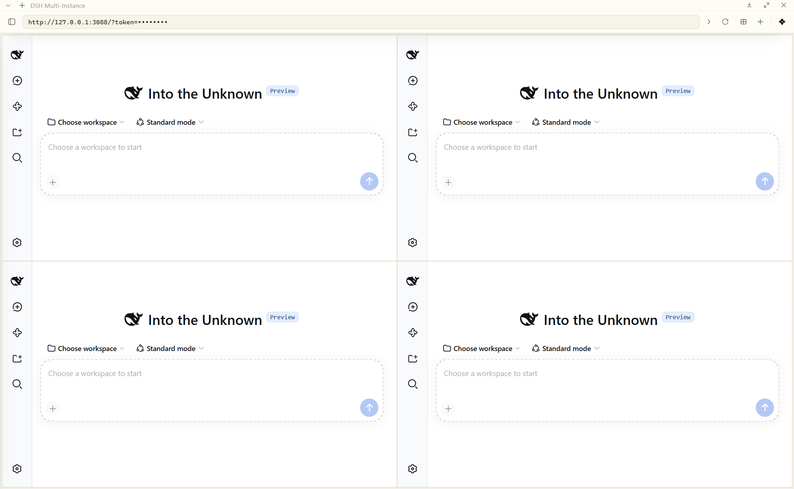

DeepSeek Harness · 桌面套壳
dsh-multi-instance
把 dsh web 装进桌面窗口，多个实例并排跑，互不干扰。
一个 多实例、多窗口的桌面客户端：本机、WSL2、或服务器上只有 URL 的远程 DSH 都能接。 每个实例各占一个窗格，自由排布与缩放；每格有自己的浏览器会话 —— 多开不再互相踩 cookie。

01它解决什么
dsh 自带的 Web 界面很好用，但一次只能看一处。当你同时盯着本机 WSL 里的一处和服务器上的另一处时， 浏览器标签页就不够用了：分不清哪个是哪个、cookie 互相覆盖、排布全靠手拉。
接
把每一处 dsh 当成一个「实例」管起来 —— WSL2 里的、Windows 本机的、远端只有 URL 的服务器。
排
每个实例开成一个窗格：拖动、缩放、吸附、1/2 · 1/3 · 1/4 一键分区，排布结果记住。
隔
每个窗格是独立的浏览器 partition，cookie 与 localStorage 互不干扰；重启不用重新认证。
02看几张图
窗格上没有边框也没有标题栏 —— 拿到的画面就是全部。操作靠悬停滑出的气泡把手。



03安装
| 推荐 |
［Releases］里两个文件二选一：
DSH.Multi-Instance-Setup-x.y.z.exe（安装包，可选目录、建快捷方式）、
DSH.Multi-Instance-x.y.z-x64.zip（免安装，解压即用）。需要 Windows 10/11。
|
|---|---|
| npm |
目前 npm 上只有 0.0.1 占位包，可用版本还没发上去 —— 在那之前请用上面那种或从源码跑。
|
| 从源码 |
git clone https://github.com/BOWLUNA/dsh-multi-instance.git cd dsh-multi-instance npm install npm start |
软件本身不含 dsh：装完在界面里点「下载实例」，或者接你已有的 DSH。它不会在后台偷偷下载任何东西。
04还做了什么
- 自动发现：扫 PATH、npm 全局目录、用户目录（4 层内）、各盘根（2 层内）—— 实测 5441 个目录约 300ms。 刻意不扫全盘（隐私），界面上会写明这次扫了哪些地方。
- 内置安装器：界面上选版本、npm 源、端口，直接装一份 dsh。实测 565 个包约 4 分钟。
- 隐藏抽屉：上侧工具栏与左侧实例栏平时全收起，画布只剩 3px 边距；展开时窗格整体让位，不遮盖内容。
- 浅色 / 深色 / 跟随系统，中英双语。
- 配置自己会留备份：每次覆盖前把上一版滚成
config.json.bak-1（留 3 份）， 一次操作只占一个槽；文件读不出来时先原样保留残片，再从备份回退并写回主文件。 - 两层测试，都能自己跑：
npm test是 57 条纯逻辑（零依赖、不需要图形界面）；npm run smoke会起一次真应用、自己在本机起一个假 DSH 页面， 断言「那个页面真的被请求了」—— 30 条，覆盖渲染、窗格挂载、独立会话与退出码。
05说清楚限制
- 仅 Windows。Electron 本身跨平台，但无边框窗口与边缘热区是照 Windows 调的，其他平台未验证。
- 一个窗格约 241MB 内存（实测 12 个窗格 = 17 个进程 / 2897MB）。收进侧栏的窗格不占内存。
- 发现只扫常见位置，装在冷门深处的找不到 —— 手动加即可。
- 窗格顶部中央 20px 是拖动把手的热区，点不到那里 DSH 页面的东西。
06相关
| DeepSeek Harness | 上游。本项目只消费它的 Web 界面，不修改本体，也不代表官方立场。 |
|---|---|
| dsh-custom-mode | 同作者的 DSH 插件：一套系统提示词的管理、切换与分享。与这个壳互补。 |
| 完整文档 | README（中文） · README (English) · 更新日志 |